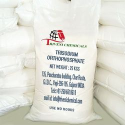
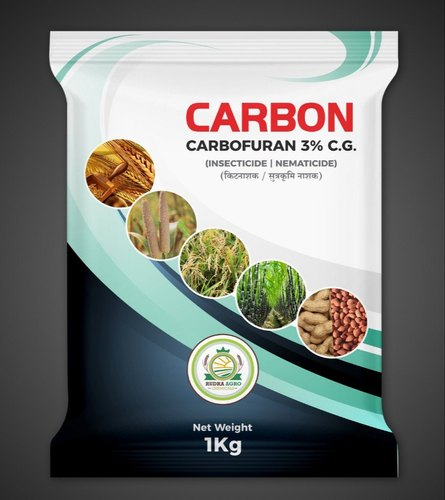
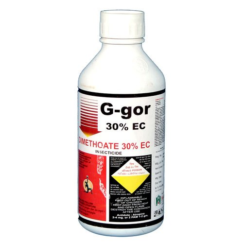

Prevention
Control measures are not known for majority of viral diseases.
Hence, mechanical, cultural methods are mostly recommended.
The infected plants should be uprooted and burnt or buried to avoid further infection.
Avoid monoculture of chilli crop.
Selection of healthy and disease - free seed.
Suitable insecticidal sprays reduce the incidence of viral diseases, since majority of viral diseases are transmitted by insect vectors.
Soaking seeds in a solution containing 150 g Trisodium orthriphosphate per litre of water for 30 minutes inhibits seed - borne inoculum.
Treated seed should be washed with fresh water and dried before sowing.
Raise 2-3 rows of maize or sorghum as border crop to restrict the spread of aphid vectors.
Apply Carbofuran 3G @ 4-5 Kg/acre in the mainfield to control sucking complex and insect vectors selectively.
If it is not possible spray the crop with systemic insecticides. Dimethoate 2ml of Acephate 1g per litre of water.
Collect and destroy infected virus plants as soon as they are noticed.

Trisodium orthriphosphate

Carbofuran 3G

Dimethoate Acephate
Back